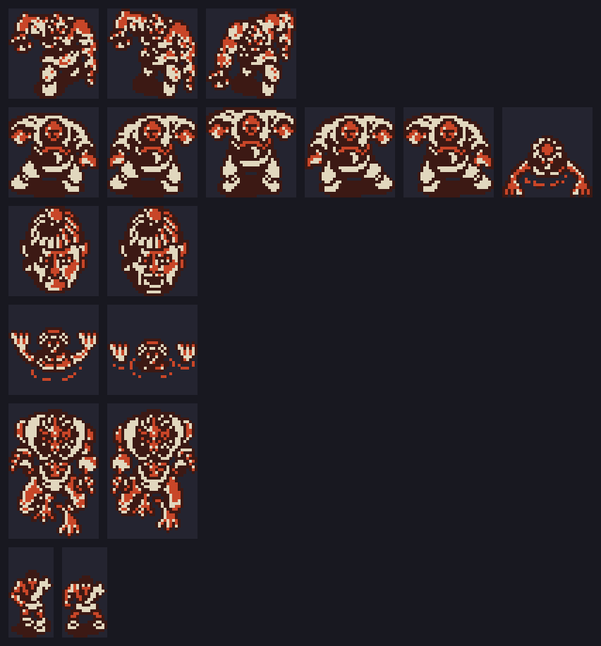

Lo que el código esconde. Cada cosa lleva la dirección donde está y cómo se sabe: medido en openMSX (con los volcados de RAM o VRAM) o sale del código (leído, sin jugarlo).
Al encender, p00:5DFF lee con RDSLT las otras ranuras buscando tres firmas (p00:5E78): seis bytes en 0x7FFA (el Game Master, RC-735), la cabecera 'CD' 07 45 FF en 0x4010 (King Kong 2, RC-745) y seis bytes en 0xBFFA (Q*bert, RC-746). Con King Kong 2, 0xC110 = 2 y INIT se va a p09:B880:
0x4002) y copia 256 bytes de allí a 0xF120;p09:B925) a 0xF220 y pone jp 0xF220 en el gancho de la interrupción;0xF120: arranca King Kong 2.Cada cuadro, el gancho mira si King Kong 2 está jugando (su 0xC100 = 5) y las teclas: con F4, pone Hinotori en las páginas 1 y 2 (ENASLT) y llama a su código de grabar (p09:B9CF); con F5, al de cargar (p09:BA9C). Las dos usan las rutinas de cinta de la BIOS (TAPOON, TAPOUT, TAPION, TAPIN) y piden un nombre de fichero.
Medido en openMSX con Hinotori en la ranura A y King Kong 2 en la B: arranca King Kong 2 (el PC corre en 0xF1xx, 0xFD9F = jp 0xF220), y al pulsar F4 jugando 0xF106 = 1, 0xF107 = 1 y en su pantalla sale «SAVE MODE / INPUT FILE NAME».
Con cualquiera de los otros dos, 0xC110 = 1. Al pulsar ESPACIO en el título, p00:46B1 va al estado 9 en vez de empezar: un menú con START GAME, MODIFY STAGE NUMBER y MODIFY PLAYER NUMBER, donde se teclea la fase (0xC115) y las vidas (0xC117) con las teclas de números. Medido en openMSX con Q*bert en la ranura B: el menú, montado aquí desde la ROM, da 0 bytes distintos.
Y la interrupción, con 0xC110 distinto de 0, mira la tecla STOP (p00:4124): el juego se congela y el PSG se calla hasta la siguiente pulsación. Sale del código.
Con F1 se pausa; con HOME sale la contraseña de la partida y con HOME otra vez se escribe una. p06:B85E la compara con las 17 cadenas de p06:B8A0; cada cadena va seguida del código que hace, al que salta con jp (hl) (p06:B89A), y cada una vale una vez por partida (0xC600 + n). Se acepta con «CORRECT». Las otras contraseñas son las de verdad: llevan el estado de la partida y una comprobación (p06:B7EE: el XOR de todos los caracteres tiene que dar 0).
| contraseña | lo que hace el código | medido |
|---|---|---|
| GAOOOOOOOOOOH | vidas + 10 (0xC160, en BCD) | 2 → 12 |
| ILOVEHINOTORI | 0xC4E2 = 1: cada cuadro, invulnerable (p02:8600) | sí |
| NANDANANDANANDA | 0xC4E0 = 1: al perder una vida se devuelve (p00:441A) | sí |
| METALSLAVE | la vida (0xC845) a 200, el máximo | del código |
| HANEYOKAGAYAKE | 0xC4E3 = 1: lo que da 1 de vida da 10 (p03:AC8F) | sí |
| FULLITEMDAYOON | 1 en todos los bytes de los objetos 1-15 | sí |
| KINOOOIHITODANE | 1 en todos los bytes de los objetos 16-33 | sí |
| SUPERBALL | 1 en los objetos 36-40 | sí |
| TURBO | el objeto 1 a 3 | sí |
| HAYAME | el arma (0xC85C, el objeto 4) a 3 | sí |
| AUTOSHOT | el arma a 3 y 0xC4E1 = 1: cada cuadro, el arma 4 (p02:8F56) | sí |
| ULTRABOX | el objeto 9 a 9 | sí |
| KOKOWADOKO | el objeto 10 a 6 | sí |
| DOKODEMOMAP | el objeto 11 a 6 | sí |
| HOIHOIHOINOHOI | el objeto 14, el de saltar de fase, a 9 | sí |
| ENDDEMOGAMITAINA | 0xC4DA = 0x000C: al volver, el estado 12, el final | sí |
| aaaaa | objetos a 3 e invulnerable (0xC4D1) | no se puede escribir |
«aaaaa» está en minúsculas, y p06:B5AB pasa a mayúsculas todo lo que se teclea antes de guardarlo: nunca puede coincidir. «Medido» es que se ha tecleado en openMSX (tools/omsx_guion.tcl) y se ha visto el cambio en la RAM.
Las columnas de una fase se unen por los lados: saliendo por la derecha de la 2 se entra en la 0, y por la izquierda de la 0 en la 2 (p01:6522, p01:653A). Por arriba, el mapa de cada columna acaba en 0xFF 0x0000: vuelve a la fila 0 (p00:580E). Se sale solo por el torii de la fase. Sale de las tablas y del código.
La tabla de p09:A269 tiene 18 puertas de seis bytes. Las 0-5 son los torii de las fases y llevan a su sala; las 6-13, las de las salas, llevan a la fase siguiente, salvo que la sala 3 tiene otra que vuelve a la fase 1, la sala 5 otra que vuelve a la fase 2, y la de la sala 6 lleva a la fase 4. Las 14-17 llevan al área 0x18, que no existe: ninguna lista de cosas las usa. El recorrido entero está en El juego. Sale de las tablas.
F5 abre un mapa de las seis fases (p02:8555). Si se lleva el objeto 14 (0xC884), los cursores eligen una (0xC887) y ESPACIO salta allí, gastando uno (p02:859F); se llega por la columna 1 (p01:65CF). Sale del código.
De p07:7457 a p08:82B3 hay 18 tiras seguidas en el RLE de los sprites (p00:4A8D), 3.676 bytes; abiertas dan de 128 a 320 bytes cada una, tamaños de juegos de patrones. Ese RLE solo lo abre p00:4AD5, que recorre las listas de cada área, y ninguna entrada nombra ninguna; la sonda de lecturas de openMSX tampoco las lee.
Abiertas y leídas como los sprites que sí se usan (dos patrones seguidos son las dos capas de un sprite de 16 × 16, y los sprites de una figura van por columnas), son seis figuras que no salen en el juego, y ninguna coincide con ninguno de los 41 juegos de sprites que se cargan:
| tiras | figura |
|---|---|
| 0-2, leídas seguidas | una bestia jorobada, 32 × 32, tres fotogramas |
| 3-7 y 12 | un monstruo de un ojo con brazos enormes, 32 × 32, seis posturas |
| 8-9 | una cara, 32 × 32, dos fotogramas |
| 10-11 | algo que sale del suelo con dos garras, 32 × 32 |
| 13-15, leídas seguidas | un demonio, 32 × 48, dos fotogramas: el dibujo más grande del cartucho |
| 16-17 | un guerrero pequeño con cinta en la cabeza, 16 × 32, dos fotogramas |

En dos tonos, como los bichos: el color lo pone el código de cada bicho, y estas no tienen. Qué eran no se sabe. Medido en la ROM (tools/figuras.py huerfanas).
En 0x4010: 'C', 'D' y una lista de direcciones de la RAM de este juego. Ningún código de Hinotori la lee. King Kong 2 lleva otra igual en el mismo sitio, y es lo que Hinotori busca en él para saber que está.
El final sube los créditos línea a línea por abajo de la pantalla (p06:AF12, con la lista de punteros de p06:AB23). Transcritos de la ROM, tal cual:
| PROGRAMMER | ULTRAMAN ADACHI · ADDE EDA · YOSHIMOTO OHTA · DARENANDA SUZUKI · 27INCH NAGAE |
| DESIGNER | SHU IWAMOTO · KI MIZUTANI · HAAAA MAKITANI · METALSLAVE NAOKI |
| SOUND | MOAI SASAKI · SG FURUKAWA |
| SPECIAL THANKS TO | PAKEMI KAMIO · ROOM 1013 · AND YOU |
| PRESENTED BY KONAMI · © KONAMI 1987 |
METALSLAVE, el apodo de uno de los diseñadores, es también una de las contraseñas de truco: la que llena la vida. Medido en la ROM.